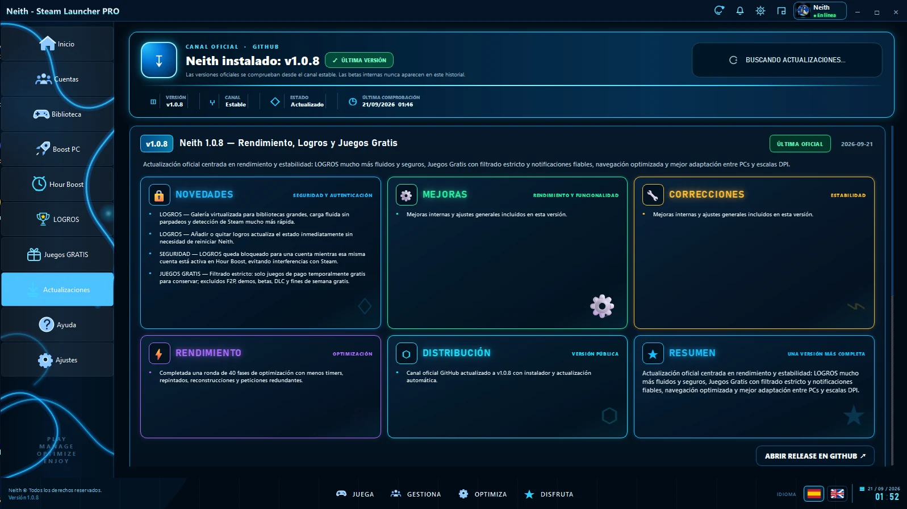
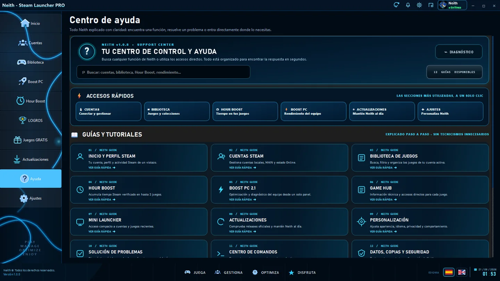
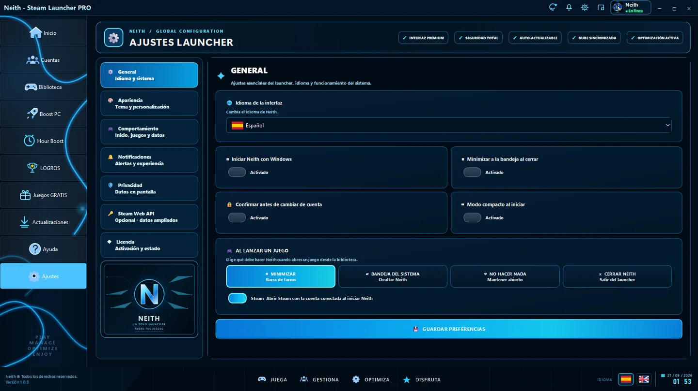

AC
Cuentas
Favoritos, estados, notas y accesos directos con identidad visual Neith.
Tu ecosistema Steam en una interfaz oscura, precisa y premium. Cuentas, biblioteca, Hour Boost, Boost PC, logros y juegos gratis en un único launcher.

La versión estable más reciente de Neith, publicada en el canal oficial de GitHub.
Cada sección presenta módulos reales del launcher y conserva su identidad visual cian, oscura y gaming.
Sesiones de boost desde una interfaz integrada y preparada para uso continuado.
Monitorización y optimización con una presentación gaming clara.
Galería visual y escalable para trabajar con tu biblioteca.
Promociones relevantes y notificaciones integradas.
Favoritos, estados, notas y accesos directos con identidad visual Neith.
Carátulas, detalles y navegación diseñados para distintos equipos y escalas.

Tarjetas destacadas, estados, accesos y datos integrados en la misma estética del launcher.
Carátulas, filtros y detalles de juego con una presentación compacta y premium.

Un historial visual de las últimas versiones estables, centrado en fluidez, estabilidad y experiencia local.
La web está preparada para métricas agregadas cuando exista una fuente pública verificable.
La sección queda lista para publicar opiniones reales sin inventar reseñas ni atribuir comentarios a personas inexistentes.
Espacio preparado para una reseña real y verificable de un usuario de Neith.
Las opiniones se podrán incorporar sin cambiar el diseño cuando dispongas de testimonios reales.
Tarjeta premium preparada para nombre, rol, avatar y comentario auténtico.
Comparación orientativa de funciones integradas. “No integrado” significa que no forma parte nativa del producto indicado.
| Función | NEITH | Steam | Playnite | GOG Galaxy |
|---|---|---|---|---|
| Cuentas Steam múltiples en una sola vista | ✓ | No integrado | Extensible | Integraciones |
| Hour Boost local integrado | ✓ | No integrado | No integrado | No integrado |
| Gestión visual de logros Steam | ✓ | Nativo | Seguimiento | Seguimiento |
| Juegos Gratis integrado | ✓ | No integrado | No integrado | No integrado |
| Boost PC integrado | ✓ | No integrado | No integrado | No integrado |
| Actualizaciones del propio launcher | ✓ | Sí | Sí | Sí |
Una hoja de ruta visual para seguir haciendo crecer el launcher sin perder su enfoque local.
Completado.
Completado.
Completado.
Completado.
En progreso.
Planificado para una fase futura.
Recorre las pantallas reales del launcher sin recortes ni deformaciones.





Las releases públicas se cargan desde el repositorio oficial de GitHub. Las versiones en borrador no se muestran.
GitHub está activo. Los demás canales quedan preparados para enlazarlos cuando estén publicados oficialmente.
Envía un mensaje desde la web o abre una incidencia en GitHub.
Un launcher para Windows que reúne cuentas, biblioteca y utilidades gaming en una interfaz unificada.
Desde la última release oficial publicada en GitHub.
La distribución oficial está orientada a Windows 10/11 x64.
Una interfaz dedicada a gestionar sesiones de boost y juegos asociados a cada cuenta.
El módulo prioriza promociones temporales de juegos base y evita categorías que no equivalen a un regalo temporal.
Sí. La web incluye una sección de ayuda preparada para crecer con el proyecto.
La web está preparada visualmente para planes futuros, sin activar compras ni alterar el funcionamiento actual.
Instala la versión estable más reciente desde el canal oficial.